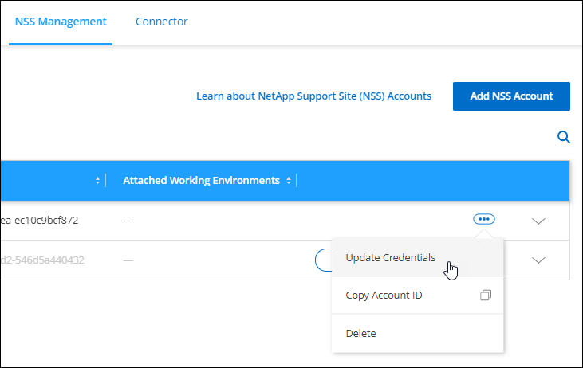

Solicitar cambios en el documento
Solicitar cambios en el documento Editar en GitHub
Editar en GitHub Guía del colaborador
Guía del colaboradorGestione cuentas del sitio de soporte de NetApp en BlueXP
Colaboradores
Proporcione las credenciales para que sus cuentas del sitio de soporte de NetApp (NSS) se registren para admitir, habilitar flujos de trabajo clave para Cloud Volumes ONTAP, etc.
Descripción general
BlueXP admite la asociación de una cuenta NSS a cada usuario de BlueXP y la asociación de una o más cuentas de NSS a su cuenta de BlueXP.
Credenciales de NSS por usuario de BlueXP
Se requieren sus credenciales de NSS individuales para acceder a su cuenta de Digital Advisor y gestionar los casos de soporte a través de BlueXP. Estas credenciales sólo son visibles para la persona que inicia sesión en BlueXP. Las credenciales se pueden eliminar y actualizar según sea necesario.
Credenciales de NSS para su cuenta de BlueXP
Se requiere la asociación de las credenciales del sitio de soporte de NetApp con el ID de cuenta de BlueXP específico para habilitar las siguientes tareas en BlueXP:
-
Registro para recibir soporte
-
Creación de casos de soporte
-
Puesta en marcha de Cloud Volumes ONTAP cuando usted traiga su propia licencia (BYOL)
Es necesario proporcionar su cuenta NSS para que BlueXP pueda cargar su clave de licencia y activar la suscripción para el plazo que adquirió. Esto incluye actualizaciones automáticas para renovaciones de términos.
-
Registro de sistemas Cloud Volumes ONTAP de pago por uso
Se requiere que proporcione su cuenta de NSS para activar el soporte de su sistema y obtener acceso a los recursos de soporte técnico de NetApp.
-
Actualizar el software Cloud Volumes ONTAP a la versión más reciente
Estas credenciales están asociadas a su ID de cuenta de BlueXP específico. Los usuarios que pertenecen a la cuenta BlueXP pueden acceder a estas credenciales desde Soporte > Gestión NSS.
Administre las credenciales de NSS para su inicio de sesión de BlueXP
Las credenciales de NSS asociadas con el inicio de sesión de BlueXP permiten acceder a Digital Advisor y capacidades de gestión de casos.
-
Al acceder a Digital Advisor en BlueXP, se le pedirá que inicie sesión en Digital Advisor introduciendo sus credenciales de NSS. Después de introducir sus credenciales de NSS, verá esta cuenta de NSS que aparece en la parte superior de la página NSS Management. A continuación, puede gestionar esas credenciales según sea necesario.
-
Al acceder a Soporte > Administración de casos, se le pedirá que introduzca sus credenciales de NSS, si aún no lo ha hecho. En esta página se muestran los casos de soporte asociados con su cuenta de NSS y con su empresa.
Tenga en cuenta lo siguiente acerca de esta cuenta de NSS:
-
La cuenta se gestiona en el nivel de usuario, lo que significa que otros usuarios que inician sesión no la pueden ver.
-
La cuenta no se puede utilizar con ninguna otra función de BlueXP: No con la creación de Cloud Volumes ONTAP, la licencia ni la creación de casos de soporte.
-
Sólo puede haber una cuenta NSS asociada con Digital Advisor y gestión de casos, por usuario.
-
En la parte superior derecha de la consola de BlueXP, haga clic en el icono Ayuda y seleccione Soporte.

-
Haga clic en NSS Management.
-
En sus credenciales de NSS, haga clic en Acción y elija cualquiera de las siguientes opciones:
-
Usuario de NSS asociado: Añadir credenciales para una cuenta del sitio de soporte de NetApp.
-
Actualizar las credenciales existentes: Actualizar las credenciales de su cuenta del sitio de soporte de NetApp.
-
Eliminar: Elimina la cuenta asociada a tu cuenta de usuario de BlueXP.
-
BlueXP actualiza sus credenciales de NSS. Los cambios se reflejarán al acceder a Digital Advisor o a la página Administración de casos.
Administre las credenciales de NSS para su cuenta de BlueXP
Gestione las credenciales de NSS asociadas con su cuenta de BlueXP para que pueda registrarse en la asistencia técnica, crear casos de soporte y habilitar flujos de trabajo clave para Cloud Volumes ONTAP.
Añada una cuenta de NSS
La consola de soporte le permite añadir y gestionar sus cuentas de la página de soporte de NetApp para utilizarlas con BlueXP a nivel de cuenta de BlueXP.
-
Si tiene una cuenta de nivel de cliente, puede añadir una o varias cuentas de NSS.
-
Si tiene una cuenta de partner o distribuidor, puede añadir una o varias cuentas de NSS, pero no se podrán añadir junto con las cuentas de nivel de cliente.
-
En la parte superior derecha de la consola de BlueXP, haga clic en el icono Ayuda y seleccione Soporte.
-
Haga clic en Administración de NSS > Agregar cuenta de NSS.
-
Cuando se le pregunte, haga clic en continuar para que se le redirija a una página de inicio de sesión de Microsoft.
NetApp utiliza Microsoft Azure Active Directory como proveedor de identidades para servicios de autenticación específicos para soporte y licencias.
-
En la página de inicio de sesión, proporcione su dirección de correo electrónico registrada en el sitio de soporte de NetApp y contraseña para realizar el proceso de autenticación.
Estas acciones permiten a BlueXP utilizar su cuenta NSS para cosas como descargas de licencias, verificación de actualizaciones de software y futuros registros de soporte.
Tenga en cuenta lo siguiente:
-
La cuenta NSS debe ser una cuenta de nivel de cliente (no una cuenta de invitado o temporal). Puede tener varias cuentas de NSS en el nivel del cliente.
-
Sólo puede haber una cuenta NSS si esa cuenta es una cuenta de nivel de partner. Si intenta agregar cuentas de NSS de nivel de cliente y existe una cuenta de nivel de partner, obtendrá el siguiente mensaje de error:
"El tipo de cliente NSS no está permitido para esta cuenta, ya que ya hay usuarios NSS de tipo diferente."
Lo mismo sucede si tiene cuentas de NSS de nivel de cliente preexistentes e intenta añadir una cuenta de nivel de partner.
-
Después de iniciar sesión correctamente, NetApp almacenará el nombre de usuario de NSS.
Se trata de un ID generado por el sistema que se asigna a su correo electrónico. En la página NSS Management, puede mostrar su correo electrónico desde
 de windows
de windows -
Si alguna vez necesita actualizar sus tokens de credenciales de inicio de sesión, también hay una opción Actualizar credenciales en la
de windowsCon esta opción se le solicita que vuelva a iniciar sesión. Tenga en cuenta que el token de estas cuentas caduca después de 90 días. Se enviará una notificación para avisarle de ello.
-
Los usuarios ahora pueden seleccionar la cuenta al crear nuevos sistemas de Cloud Volumes ONTAP, al registrar los sistemas de Cloud Volumes ONTAP existentes y al registrarse para obtener soporte.
Actualice una cuenta de NSS para el nuevo método de autenticación
A partir de noviembre de 2021, NetApp ahora utiliza Microsoft Azure Active Directory como proveedor de identidades para servicios de autenticación específicos para soporte y licencias. Como resultado de esta actualización, BlueXP le solicitará que actualice las credenciales de cualquier cuenta existente que haya agregado previamente.
-
Si aún no lo ha hecho, "Cree una cuenta B2C de Microsoft Azure Active Directory que estará vinculada a su cuenta actual de NetApp".
-
En la parte superior derecha de la consola de BlueXP, haga clic en el icono Ayuda y seleccione Soporte.
-
Haga clic en NSS Management.
-
Para obtener la cuenta NSS que desea actualizar, haga clic en Actualizar cuenta.

-
Cuando se le pregunte, haga clic en continuar para que se le redirija a una página de inicio de sesión de Microsoft.
NetApp utiliza Microsoft Azure Active Directory como proveedor de identidades para servicios de autenticación específicos para soporte y licencias.
-
En la página de inicio de sesión, proporcione su dirección de correo electrónico registrada en el sitio de soporte de NetApp y contraseña para realizar el proceso de autenticación.
Una vez completado el proceso, la cuenta que ha actualizado debería aparecer ahora como una cuenta new en la tabla. La versión older de la cuenta sigue apareciendo en la tabla, junto con cualquier asociación de entorno de trabajo existente.
-
Si los entornos de trabajo existentes de Cloud Volumes ONTAP están asociados a la versión anterior de la cuenta, siga los pasos que se indican a continuación Adjunte esos entornos de trabajo a una cuenta de NSS diferente.
-
Vaya a la versión anterior de la cuenta NSS, haga clic en Y, a continuación, seleccione Eliminar.
Actualice las credenciales de NSS
Deberá actualizar las credenciales de sus cuentas de NSS en BlueXP cuando se produzca una de las siguientes situaciones:
-
Las credenciales de la cuenta se cambian
-
El token de actualización asociado con su cuenta caduca después de 3 meses
-
En la parte superior derecha de la consola de BlueXP, haga clic en el icono Ayuda y seleccione Soporte.
-
Haga clic en NSS Management.
-
Para la cuenta de NSS que desea actualizar, haga clic en Y, a continuación, seleccione Actualizar credenciales.

-
Cuando se le pregunte, haga clic en continuar para que se le redirija a una página de inicio de sesión de Microsoft.
NetApp utiliza Microsoft Azure Active Directory como proveedor de identidades para servicios de autenticación específicos para soporte y licencias.
-
En la página de inicio de sesión, proporcione su dirección de correo electrónico registrada en el sitio de soporte de NetApp y contraseña para realizar el proceso de autenticación.
Adjunte un entorno de trabajo a una cuenta de NSS diferente
Si su organización tiene varias cuentas del sitio de soporte de NetApp, puede cambiar qué cuenta está asociada a un sistema Cloud Volumes ONTAP.
Esta función solo es compatible con cuentas de NSS que se han configurado para usar Microsoft Azure AD adoptado por NetApp para la gestión de identidades. Para poder utilizar esta función, necesita hacer clic en Agregar cuenta de NSS o Actualizar cuenta.
-
En la parte superior derecha de la consola de BlueXP, haga clic en el icono Ayuda y seleccione Soporte.
-
Haga clic en NSS Management.
-
Complete los siguientes pasos para cambiar la cuenta de NSS:
-
Expanda la fila de la cuenta del sitio de soporte de NetApp con la que está asociado actualmente el entorno de trabajo.
-
Para el entorno de trabajo para el que desea cambiar la asociación, haga clic en
-
Seleccione Cambiar a una cuenta de NSS diferente.

-
Seleccione la cuenta y haga clic en Guardar.
-
Muestra la dirección de correo electrónico de una cuenta de NSS
Ahora que las cuentas del sitio de soporte de NetApp usan Microsoft Azure Active Directory para los servicios de autenticación, el nombre de usuario de NSS que aparece en BlueXP suele ser un identificador generado por Azure AD. Como resultado, es posible que no conozca inmediatamente la dirección de correo electrónico asociada a esa cuenta. Pero BlueXP tiene la opción de mostrarle la dirección de correo electrónico asociada.

|
Cuando vaya a la página NSS Management, BlueXP genera un token para cada cuenta de la tabla. Ese token incluye información acerca de la dirección de correo electrónico asociada. A continuación, el token se elimina cuando se sale de la página. La información nunca se almacena en la caché, lo que ayuda a proteger su privacidad. |
-
En la parte superior derecha de la consola de BlueXP, haga clic en el icono Ayuda y seleccione Soporte.
-
Haga clic en NSS Management.
-
Para la cuenta de NSS que desea actualizar, haga clic en Y, a continuación, seleccione Mostrar dirección de correo electrónico.

BlueXP muestra el nombre de usuario del sitio de soporte de NetApp y la dirección de correo electrónico asociada. Puede utilizar el botón de copia para copiar la dirección de correo electrónico.
Quite una cuenta de NSS
Elimine cualquiera de las cuentas de NSS que ya no desee utilizar con BlueXP.
Tenga en cuenta que no puede eliminar una cuenta que esté actualmente asociada a un entorno de trabajo de Cloud Volumes ONTAP. Primero tienes que hacerlo Adjunte esos entornos de trabajo a una cuenta de NSS diferente.
-
En la parte superior derecha de la consola de BlueXP, haga clic en el icono Ayuda y seleccione Soporte.
-
Haga clic en NSS Management.
-
Para la cuenta de NSS que desea eliminar, haga clic en Y, a continuación, seleccione Eliminar.

-
Haga clic en Eliminar para confirmar.